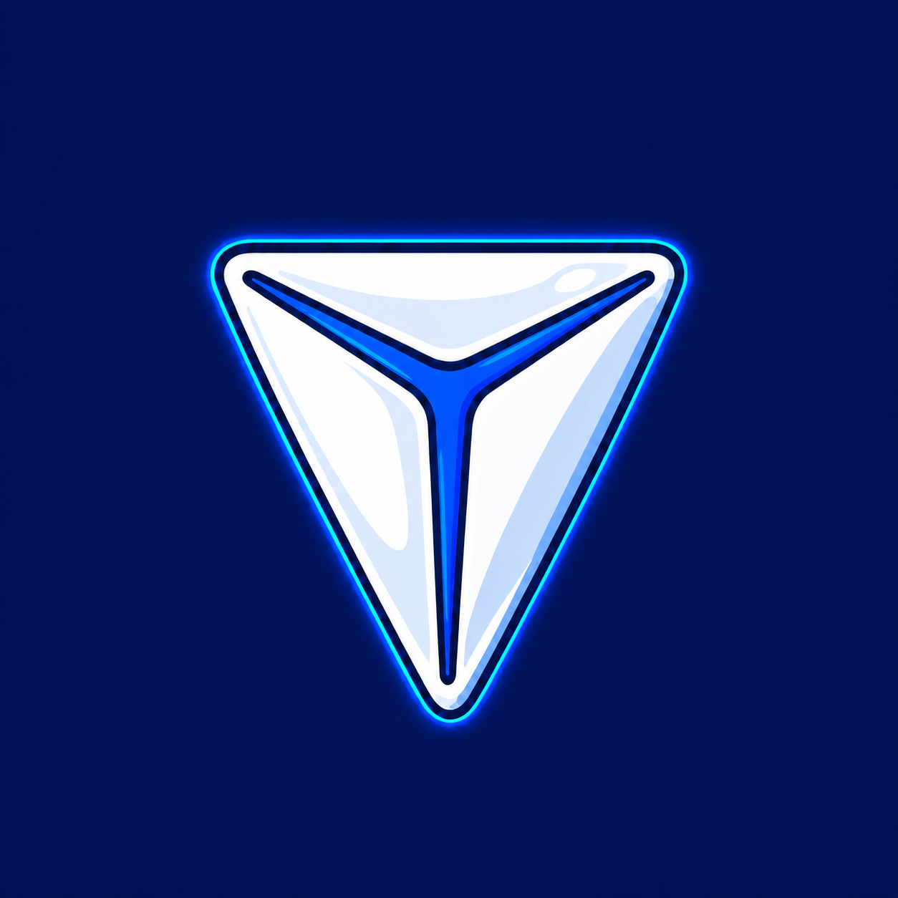

Поддержать Deepal Tools
Все приложения бесплатные. Если они вам пригодились, выберите, как поддержать проект.
Tribute
В Telegram или в браузере
Открыть в Telegram
Веб-версия
Boosty
Картой, если Tribute не открывается
Поддержать через Boosty